ÓRBITA 3.2 · suite de intranet para HCL DX Compose CF238/CF239 · EUROPESIP
Las aplicaciones de ÓRBITA, explicadas fácil
Qué son las once aplicaciones, cómo están hechas por dentro, cómo han evolucionado de WebSphere Portal 8.5
a la versión 3.2 y cómo se instalan con Helm, paso a paso.
Repositoriohttps://github.com/europesip/orbita · chart oci://ghcr.io/europesip/charts/hcl-dx-orbita ·
imágenes en ghcr.io/europesip/orbita (públicos)
ÓRBITA es una intranet de empleados para HCL DX Compose: la portada con las noticias de la empresa,
el fichaje, las vacaciones, los gastos, la comunicación con RRHH, el directorio, los documentos y las encuestas. Los
responsables aprueban desde una bandeja, y un asistente de IA puede hacer casi todo eso hablando.
AnalogíaSi DX Compose es el edificio de la empresa, ÓRBITA es todo lo que hay en la
planta de personal: el tablón de anuncios de la entrada (la portada), las ventanillas (las páginas), la oficina donde
se hacen los trámites (la API) y el archivador (PostgreSQL). Las noticias del tablón no las guarda ÓRBITA: son
contenido de WCM, el gestor de contenidos del propio DX.
Las once aplicaciones
PortadaLa primera página: noticias de WCM con
once diseños, comunicados por confirmar, próximos eventos y festivos, celebraciones, la encuesta abierta y accesos.
Dieciséis diseños de portada.
Mi intranetEl panel personal: fichaje rápido, horas de
las últimas semanas, vacaciones, gastos, lo que tienes por aprobar, quién falta, nóminas nuevas y avisos.
FichajeEntrar · Salir · Volver; pausas con motivo,
oficina o teletrabajo, línea de tiempo del día, registro mensual y correcciones (registro de jornada, RDL 8/2019).
VacacionesSaldo del año, el año entero en un
calendario donde se piden días arrastrando, y el cuadrante del equipo.
Gastos y viajesNotas de gasto con tickets (foto o PDF,
leídos con OCR en el navegador), política por categoría, viajes y pagos por Administración.
AprobacionesLa bandeja del responsable:
ausencias, correcciones, notas de gasto y viajes, con cuánta gente falta esos días.
Comunicación con RRHHComunicados con acuse
de lectura, consultas privadas a RRHH con respuestas sugeridas, y preguntas frecuentes.
PersonasDirectorio con disponibilidad de hoy,
fichas con foto, organigrama, celebraciones y reconocimientos entre compañeros.
Mis documentosNóminas con sus importes,
certificados, contratos con «recibí» y envíos a RRHH. El responsable no ve nada de su equipo.
EncuestasClima y pulso anónimos por diseño:
plantillas, ocho tipos de pregunta, informe con favorabilidad, eNPS, mapa de calor y plan de acción.
Quiosco de fichajeUna tablet en la entrada: cada
persona ficha con su PIN o enseñando el QR de su tarjeta a la cámara.
Las marcadas en azulson las que han llegado después de la
2.x. En la versión 2.2.1 (la del manual anterior) había seis aplicaciones; ahora son once.
2 · Un vistazo a las aplicaciones
Así se ven en DX Compose, con el aspecto del propio DX: tipografía Inter, azul de DX, bordes finos e iconos
IBM Carbon. Capturas del laboratorio con los usuarios de la demo.
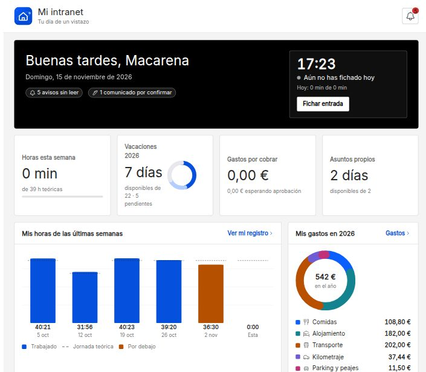
Mi intranet: el panel de cada persona.
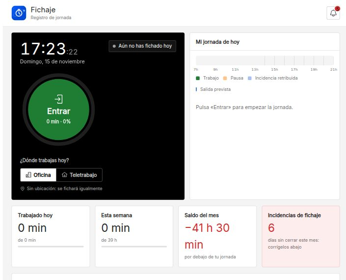
Fichaje: el botón grande y la línea de tiempo del día.
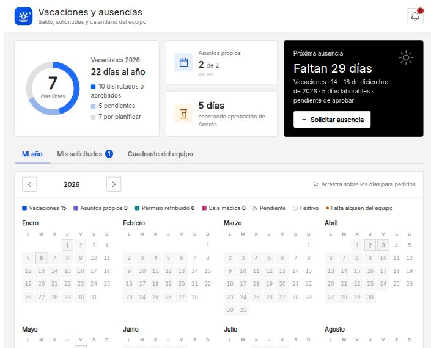
Vacaciones: saldo y calendario del año.
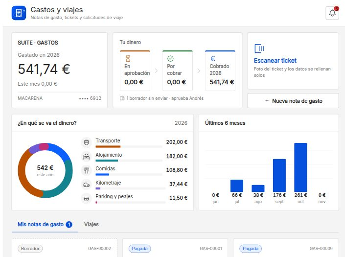
Gastos y viajes: notas, tickets y política.
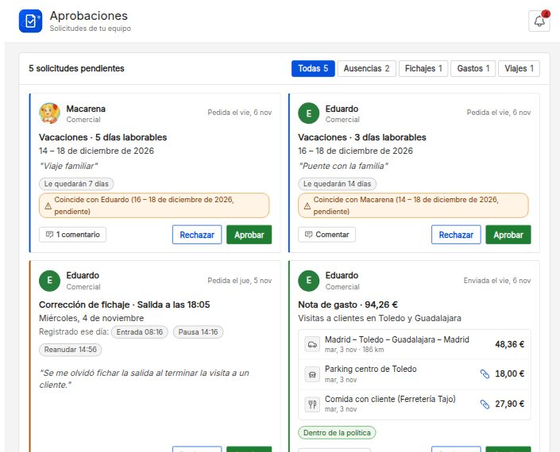
Aprobaciones: la bandeja del responsable.
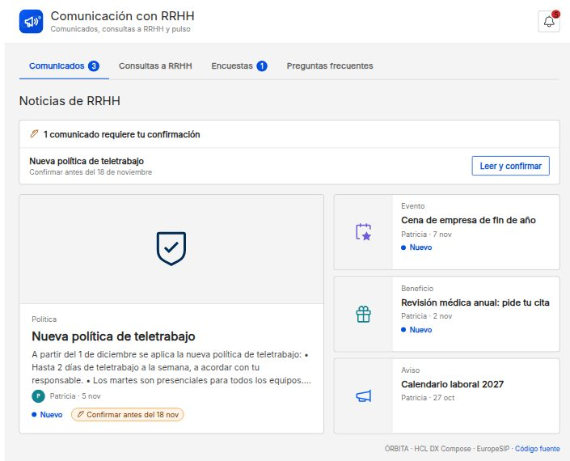
Comunicación con RRHH: comunicados como noticias.
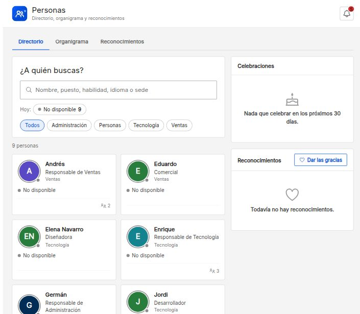
Personas: directorio con fotos y disponibilidad.
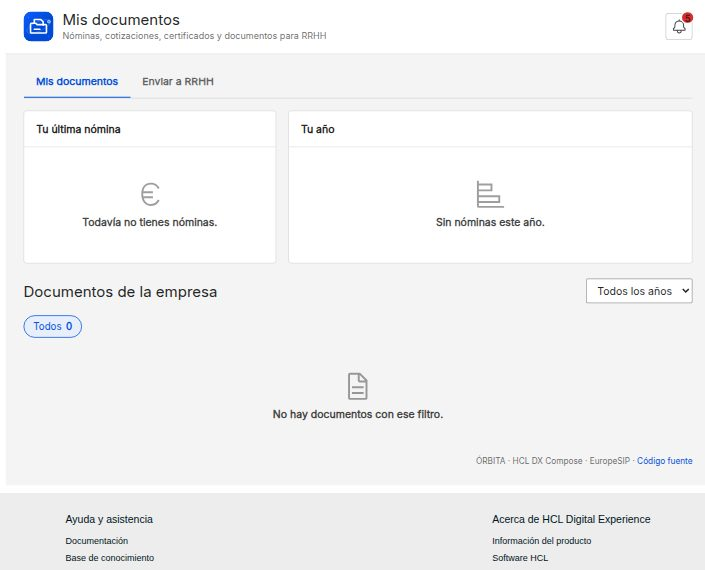
Mis documentos: la última nómina y el año.
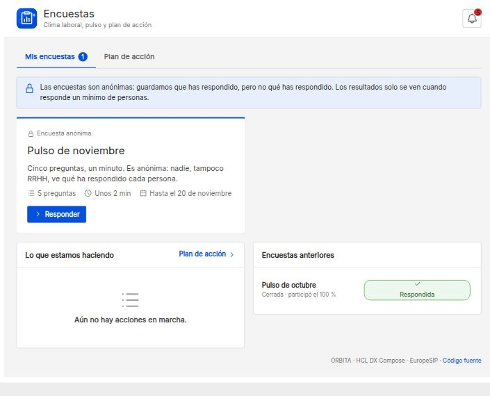
Encuestas: responder e informe.
Y lo que comparten todas
Función
Qué hace
Asistente «Pregúntale a ÓRBITA»
Chat en un panel lateral que actúa como el usuario que pregunta, con
43 herramientas: «¿cuántas vacaciones me quedan?», «ficha mi entrada en teletrabajo», «¿quién es el responsable de
Jordi?». Por defecto usa el modelo a través de LiteLLM; también puede ser el chat de HCL DX IQ (sección 9).
Fotos
Cada persona pone la suya en Personas (o RRHH por ella). Sale en todas las aplicaciones y en la
cabecera del portal y la barra de herramientas de DX. Sin foto, las iniciales.
Español e inglés
Interfaz, fechas, importes y avisos en el idioma del perfil de DX de cada usuario. Los
datos de la demo están en español.
Privacidad
Las consultas a RRHH no las ve el responsable; las encuestas guardan las respuestas sin usuario ni hora; el directorio nunca dice el motivo de una ausencia; las nóminas solo las ven su dueño, RRHH y Administración.
3 · La portada y las noticias de WCM
La portada es la primera página de ÓRBITA. Sus noticias son contenido de HCL DX WCM: el chart prepara
la biblioteca y las plantillas, cualquiera propone una noticia desde ÓRBITA, RRHH la revisa y la publica en WCM.
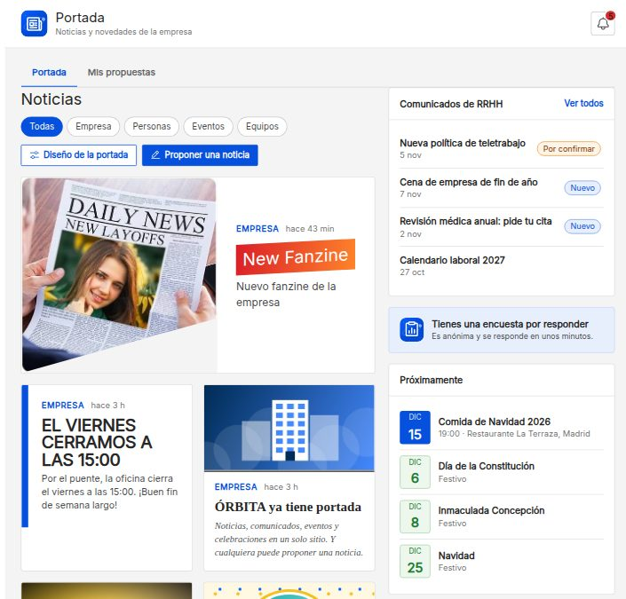
La portada (diseño clásico): noticias a la izquierda,
comunicados, encuesta y próximos eventos a la derecha.
Analogía: el periódico de la empresaWCM es la imprenta y el
archivo: guarda cada noticia con su plantilla. ÓRBITA es la redacción: cualquiera puede llevar un artículo, la jefa de
redacción (RRHH) lo corrige y da la orden de imprimir. La portada es el quiosco donde se lee.
Lo que prepara el chart en WCM
Biblioteca
orbita-noticias: la lee todo usuario autenticado; Editor para
news.editors.
Secciones
empresa · personas · eventos · equipos
Plantillas
noticia · breve · evento · bienvenida · logro, cada una con su plantilla de presentación
Demo
seis noticias, con sus imágenes en la colección del DAM «ÓRBITA Noticias»
Lo hace files/noticias.mjs en el Job de instalación, después del tema. Es idempotente: lo que ya
existe se conserva.
De la propuesta a la portada
1 · Proponermacarena elige una plantilla y rellena el formulario que ÓRBITA genera a partir de ella
→
2 · Enviarla ve en vista previa y la manda a revisión (estado REVISION); RRHH recibe un aviso
→
3 · Revisar (RRHH)corrige, devuelve con un comentario, rechaza o publica
→
4 · Publicar en WCMel navegador de patricia crea el contenido con sus permisos de Editor
→
5 · Portadatodo el mundo la lee; quien la propuso recibe el aviso
Elemento de la plantilla
Cómo lo rellena el formulario de ÓRBITA
Texto enriquecido
Un editor sencillo (negrita, listas, títulos, enlaces). Se limpia con una lista blanca en el servidor y en el navegador.
Texto corto que empieza por…
Imagen → subir imagen (redibujada en JPEG, hasta 1600 px, sin metadatos) ·
Fecha → fecha y hora · Enlace → enlace · Diseno → selector de diseño · otro → texto
Once diseños para cada noticia
Se eligen con miniaturas en el formulario y se guardan en el elemento Diseno de WCM. Se aplican en la
tarjeta de la portada, en el lector y en la vista previa. Cada plantilla propone uno.
Clásicoimagen y texto (noticia)
Portadaimagen a toda página con el titular encima
Dos columnastexto a dos columnas
Cartelbloque de color con titular y datos (breve)
Destacadola entradilla como una cita
Revistatitular de periódico, letra capital
Cinenegro, viñeta, titular enorme con degradado
Titularmayúsculas gigantes e imagen desplazada
Diagonalimagen cortada y banda inclinada
Cuenta atrásdías, horas y minutos en directo (evento)
Celebraciónconfeti e imagen redonda (bienvenida, logro)
¿Otro valor?Lo que no se reconoce se muestra como clásico.
Dieciséis diseños de portada
RRHH elige el de la empresa; cada persona puede elegir otro para sí y volver al de la empresa cuando quiera. Se ven al
momento detrás del selector, se guardan en la tabla AJUSTE (migración V9) y las animaciones respetan la
opción del sistema de reducir el movimiento.
carrusel · nocturna (fondo oscuro) · historias (cada noticia a pantalla
completa con índice de puntos y barra de progreso)
Escaparate
órbita (la destacada como un planeta y las demás como satélites en dos órbitas que giran)
· neón (cuadrícula luminosa y tarjetas de cristal) · constelación (estrellas unidas por líneas) ·
carrusel 3D (anillo en perspectiva con reflejo) · burbujas (las noticias flotan y crecen al pasar el ratón)
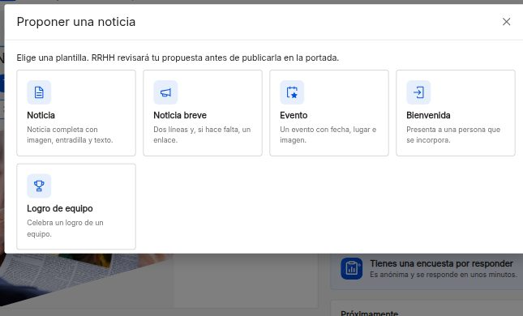
Proponer: elegir la plantilla de WCM.
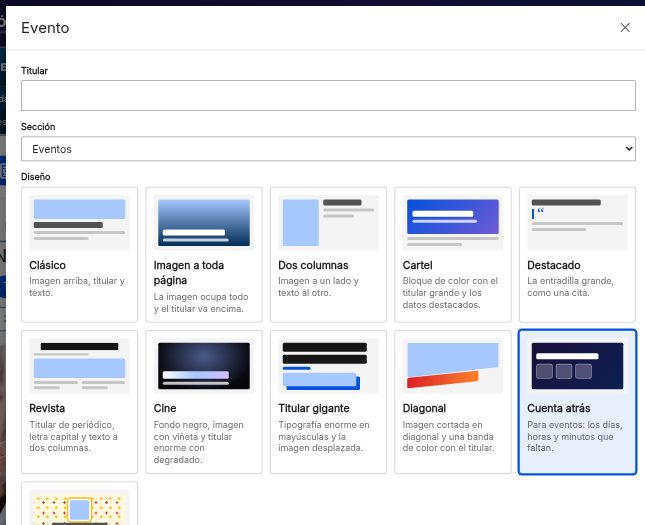
El formulario generado a partir de la plantilla.
¿Por qué la revisión está en ÓRBITA y no en un flujo de trabajo de WCM?Probado en CF238: con
un flujo de WCM, POST /wcmrest-v2/item/{id}/approve funciona para el administrador de DX pero responde 403 a
los usuarios con el rol Reviewer (incluso Manager). Revisando en ÓRBITA, los empleados solo necesitan leer en WCM y
publican los editores. Content Composer sigue disponible para ellos. Quién publica: los usuarios de news.editors (en los labs, el grupo cn=dxmarketing, donde está patricia).
4 · Usuarios de la demo y reglas
No se da de alta a nadie: la historia de la demo se escribe por papeles, y cada papel lo hace un usuario de DX
que ya existe.
Analogía: una obra de teatroEl guion (los datos de la demo) tiene personajes: la persona
de RRHH, el responsable de ventas, una comercial… El chart solo necesita saber qué actor (qué usuario de DX) hace cada
papel. Eso es el valor demo.people. Por defecto, los actores son los usuarios del OpenLDAP de los labs.
Empleadoficha, pide, consulta lo suyo, propone noticias
⊂
Responsable+ ve su equipo y aprueba sus solicitudes
⊂
RRHH+ toda la plantilla, comunicados, encuestas, documentos, revisa noticias, restaura la demo
·
Administración+ paga notas aprobadas y publica nóminas
Papel
Usuario (labs)
Rol en ÓRBITA
PIN quiosco
rrhh
patricia
RRHH: toda la plantilla; revisa y publica noticias (Editor en WCM)
1000
ventas-responsable
andres
Responsable de Ventas: aprueba a su equipo
2001
ventas-1
macarena
Comercial
1111
ventas-2
eduardo
Comercial
2222
tecnologia-responsable
enrique
Responsable de Tecnología
3001
tecnologia-1
jordi
Desarrollador
3333
administracion
german
Administración: paga las notas de gasto, publica nóminas
6001
tecnologia-2, -3
(ficticios)
Aparecen en los datos; nadie entra con ellos
4444, 5555
ContraseñasLas de esos usuarios en vuestro directorio (en los labs, las del OpenLDAP del Lab 2A).
ÓRBITA no guarda contraseñas.
Volver a empezar la demoRRHH › Fichaje › Informes › Restaurar datos de demostración. Los datos
son relativos al día en que se cargan. Las noticias de WCM no se tocan.
Reglas de negocio que conviene saber
Tema
Regla
Jornada teórica
Lunes a jueves 8 h, viernes 7 h (39 h semanales). Festivos nacionales cargados; RRHH añade los locales.
Fichajes
No se modifican ni se borran: un error se arregla con una corrección que aprueba el responsable.
Pausas
Desayuno, comida, gestión personal: no cuentan como trabajo. Médico y visita a cliente: sí.
Política de gastos
Comidas hasta 30 €, alojamiento 120 €/noche, kilometraje 0,26 €/km, otros 50 €. Si se supera, hay que justificarlo.
Encuestas
Resultados solo a partir de un mínimo de respuestas (5 por defecto, nunca menos de 3); se oculta un departamento si se pudiera deducir por resta.
5 · Cómo se hizo: cuatro etapas
ÓRBITA nació como portlets de WebSphere Portal 8.5. La 1.0 la llevó a DX Compose con scripts; la 2.0 la
convirtió en un producto con un solo chart de Helm; la 3.x la hizo una intranet completa, integrada con DX.
Portal 8.5
Un WAR de portlets
React dentro de cada portlet JSR 286
Lógica en serveResource()
Usuarios del portal
Base de datos Derby
Instalación con un script
1.0.0
Migración a DX Compose
6 Script Applications
suite-api (Java 8)
Empleados dados de alta en LDAP
SSO copiando claves LTPA
Scripts k8s/01…06
MCP con 2 herramientas
2.0 → 2.3
Producto con chart
helm install hcl-dx-orbita
Imágenes públicas
DX dice quién es el usuario
API REST /orbita-api/v1
Java 21, Flyway, PostgreSQL
MCP con 26 herramientas
3.0 → 3.2
Intranet integrada con DX
Asistente propio (LiteLLM)
Español e inglés
Tema de ejemplo con el DAM
OpenID Connect
11 aplicaciones, fotos
Portada con noticias de WCM
43 herramientas de IA
AnalogíaEn Portal 8.5 cada aplicación era un todo en uno: escaparate, oficina y archivo
en la misma caja. En la 1.0 se separaron en piezas, pero el montaje era artesanal. En la 2.0 se convirtió en un mueble
de catálogo: piezas fabricadas en serie (imágenes) y un único manual de montaje (el chart). En la 3.x el mueble encaja
con el resto de la casa: usa el tema, el DAM, WCM y la barra de herramientas de DX.
Qué cambió en cada salto
Tema
1.0
2.x
3.x
Instalación
Scripts k8s/01…06, kubectl cp
Un chart: helm upgrade --install
El mismo chart, que además prepara tema, DAM y WCM
26 herramientas en IQ, como el usuario de la sesión
43 herramientas; asistente propio por defecto o IQ
Contenido
—
—
Noticias en WCM, imágenes y logos en el DAM
Idioma
Español
Español (IA en ES/EN)
Español e inglés en todo
6 · El mapa: dónde vive cada pieza
ÓRBITA no es de HCL, así que se instala en el namespace de las herramientas de terceros (dx-shared
en los labs), junto a PostgreSQL y LiteLLM. En DX quedan sus páginas, sus Script Applications, su tema, sus imágenes del
DAM y la biblioteca de noticias.
Empleado navegador
un solo host: /wps · /dx · /orbita-api
dx-demo · HCL DX Compose
Web Engine · páginas /wps/myportal/Home/portada, fichaje…
WCM · 11 Script Applications (React) y la biblioteca orbita-noticias
Tema OrbitaTheme · cabecera, logo, foto del usuario, botón del asistente
DAM · colecciones «ÓRBITA» (logos) y «ÓRBITA Noticias»
API de perfil de DX · responde «esta cookie es de macarena»
DX IQ Integrator (opcional) · chat de IA de HCL
dx-shared · release «orbita»
orbita-api (Open Liberty, Java 21) :9080 /orbita-api/v1 API REST y asistente :9081 /mcp herramientas para IQ (NetworkPolicy)
PostgreSQL (requisito) · base y usuario orbita, tablas por Flyway
LiteLLM · el modelo de IA del asistente propio
Jobs de instalación orbita-db: crea base y usuario orbita-scriptapps-push: DXClient sube las apps, crea las páginas, el tema y WCM
El truco del «mismo dominio»Todo cuelga de https://<host de DX>: el portal en
/wps, WCM en /wps/mycontenthandler, la API en /orbita-api. Así el navegador envía la
misma cookie de sesión a todo, sin CORS ni dobles logins. Por eso la portada puede leer WCM con la sesión de quien mira.
Qué guarda cada uno
Dónde
Qué
PostgreSQL
Fichajes, vacaciones, gastos, comunicados, consultas, encuestas, fichas de personas, fotos,
documentos y nóminas, propuestas de noticias y sus imágenes, ajustes (diseño de portada).
WCM
Las noticias publicadas, sus plantillas y secciones; también el código de las 11 Script Applications.
DAM
Logos del tema e imágenes de las noticias de demostración.
Directorio de DX
Los usuarios y sus contraseñas (en los labs, OpenLDAP). ÓRBITA solo guarda el nombre de usuario.
7 · Por dentro: el código
Tres capas, como en un restaurante: la sala (lo que ves), la cocina (donde se hacen las cosas) y la despensa
(donde se guarda todo). Y un menú que comparten sala y cocina: api/rutas.json.
La sala · web/React 18 + Vite Portada.jsx, Inicio.jsx, Fichaje.jsx, Vacaciones.jsx, Gastos.jsx,
Aprobaciones.jsx, Comunicacion, Personas, Documentos, Encuestas, Kiosco comunes: ui.jsx, wcm.js, asistente.jsx, ocr.js → 11 Script Applications
La despensaPostgreSQL, base «orbita» V1__esquema.sql … V9__ajustes.sql
Una API REST de verdad
api/rutas.json dice, para cada operación de la lógica, su método HTTP y su ruta. Lo leen el servidor y la
interfaz, así que nunca se desincronizan:
GET /orbita-api/v1/vacaciones/resumen → saldo del año
POST /orbita-api/v1/noticias/propuestas/7/enviar → a revisión (RRHH recibe un aviso)
PUT /orbita-api/v1/portada/diseno {"ambito":"mio","valor":"orbita"}
PUT /orbita-api/v1/personas/macarena/foto → nueva foto (redibujada a 256 px)
# 401 sin sesión de DX · 403 sin permiso · 422 {"error":"No te quedan días","aviso":true} · 404 · 405
quiosco/identificacion, quiosco/marcas: sin sesión, con la clave del dispositivo
Un solo cerebroLa API REST, el asistente y el servidor MCP llaman a la misma función,
Despachador.ejecutar(op, parámetros, usuario). Por eso la IA tiene exactamente los mismos permisos que el
usuario en pantalla.
El esquema evoluciona sin perder datosLas tablas las crean y actualizan migraciones Flyway al
arrancar orbita-api: V1 esquema · V2 avisos · V3 comunicación · V4 personas · V5 documentos · V6 encuestas ·
V7 fotos · V8 noticias · V9 ajustes. Una migración publicada nunca se edita: se añade otra.
Lo que viene de fuera se limpiaEl texto enriquecido de las noticias pasa por una lista blanca de
etiquetas (Html.java en el servidor y limpiarHtml en el navegador, también para lo escrito en
Content Composer). Fotos e imágenes se comprueban por su contenido y se vuelven a dibujar: del fichero original no queda nada.
8 · Quién es el usuario: lo dice DX
El empleado entra en el portal una vez y ÓRBITA ya sabe quién es. No lo averigua por su cuenta: se lo pregunta a DX.
Analogía: la pulsera del festivalAl entrar en el portal te ponen una pulsera (la cookie de
sesión). En la 1.0, ÓRBITA tenía una copia del sello secreto para comprobar pulseras por sí misma (claves LTPA copiadas).
Desde la 2.0, cuando llegas con tu pulsera, ÓRBITA llama a la taquilla (la API de perfil de DX) y le pregunta «¿de quién
es esta pulsera?». No guarda sellos, ni listas de asistentes, ni llaves de nadie.
1 · Inicia sesión en DXcon usuario y contraseña (LDAP) o por OpenID Connect (Keycloak, Entra ID…)
→
2 · La app llamaa /orbita-api/v1/… con la misma cookie
→
3 · orbita-api(SesionDx.java) pregunta a DX
→
4 · La API de perfilcontesta «es macarena» y el idioma preferido
Ventaja
Por qué importa
Sin claves LTPA copiadas
En la 1.0 se copiaban las del Web Engine (iguales en todas las instalaciones de CF238). Ya no hacen falta.
Sin configuración de LDAP
ÓRBITA no conoce el directorio: vale cualquiera que use DX (LDAP, Active Directory, OIDC…).
Sin credenciales guardadas
La API no guarda contraseñas de administrador de DX ni del bind del LDAP.
La IA no puede suplantar
El asistente y el MCP usan la misma sesión del usuario: el modelo no elige en nombre de quién actúa.
OpenID Connect (3.1.2)Con el cliente OIDC de Liberty, la cookie de sesión de DX no se llama
LtpaToken2 sino WAS_n<hash>, y no se puede cambiar. Por eso dx.sessionCookie
admite prefijos con *; con dx.oidcSupport: true (por defecto) vale LtpaToken2,WAS_n*.
El certificado de DXPara preguntar por HTTPS, la API tiene que fiarse del certificado de DX. Si es
autofirmado o de una CA privada (como en los labs), se le da su CA en un Secret (dx.caSecret).
dx.insecureSkipTLSVerify existe solo para laboratorio.
Lo mismo hace el navegador con WCMLa portada lee las noticias de /wps/mycontenthandler/wcmrest-v2
con la sesión de quien mira: cada persona ve lo que WCM le deja ver, y solo un Editor puede publicar. ÓRBITA no necesita
una cuenta técnica de WCM.
¿Y el quiosco?Su página exige sesión (la tablet inicia sesión con un usuario), pero su parte de la API
(/v1/quiosco/…) es pública: identifica a cada persona por su PIN o su QR, y al dispositivo por una clave que
genera el chart (Secret orbita-kiosk).
9 · La IA: asistente y servidor MCP
El botón «✨ Pregúntale a ÓRBITA» abre un chat. Para hablar de vacaciones, gastos o personas, ÓRBITA le presta
un maletín con 43 herramientas. Hay dos formas de conectarlo:
1 · Asistente propio (por defecto, assistant.backend: orbita)orbita-api llama al modelo a
través de LiteLLM solo con las herramientas de ÓRBITA. Prompt pequeño: cada pregunta gasta muchos menos tokens que
el chat de IQ. Modelo: assistant.model (por defecto el alias de IQ, iq-general-purpose).
2 · HCL DX IQ (assistant.backend: iq)El chat de IQ con el servidor MCP de ÓRBITA
registrado en el Integrator: el modelo ve a la vez las herramientas de DX (WCM, DAM, páginas) y las de ÓRBITA. Pensado
para los profesionales de DX.
Cada herramienta cuesta tokensSu descripción viaja en cada llamada al modelo, se use o no.
Las 43 son unos 7.800 tokens. Con mcp.tools se publican solo algunas áreas (enabled), se quitan
otras (disabled) o solo las 29 de consulta (readOnly: true).
Fuera a propósitoPagar, restaurar la demo, borrar, exportar, publicar comunicados o noticias,
firmar documentos o responder encuestas no son herramientas de IA: son acciones masivas, irreversibles o que deben
hacerse en persona.
Seguridad
Capa
Cómo
Identidad
Se usa la sesión de DX del usuario del chat y ÓRBITA pregunta a DX quién es. No hay parámetro «usuario». El puerto MCP 9081 no sale por el Ingress (NetworkPolicy).
Confirmación
Lo que modifica datos devuelve primero un resumen y solo actúa con confirmar: true.
Permisos y auditoría
Cada operación comprueba qué puede hacer esa persona y deja ORBITA MCP auditoria herramienta=… usuario=… en el log. Token Bearer opcional (mcp.tokenSecret).
10 · Cómo se construye y se publica
GitHub Actions construye, prueba y publica dos imágenes y el chart, todo público. Una etiqueta v*
hace una versión.
web/React + Vite
→
GitHub Actions.github/workflows/build.yml push a main → :main tag v3.2.0 → :3.2.0
api/ back end (Maven, Java 21, Jakarta EE 10)
rutas.json contrato de la API REST: método + ruta → operación
core/ lógica (com.europesip.orbita): operaciones, permisos, Flyway, demo, IA, sesión de DX
rest/ orbita-api.war: API REST (/orbita-api/v1) y asistente
mcp/ orbita-mcp.war: servidor MCP
web/ interfaz React (Vite); scripts/scriptapps.mjs genera las 11 Script Applications
images/ Dockerfiles: orbita-api (Open Liberty) y orbita-scriptapps
chart/hcl-dx-orbita/ chart de Helm; files/: after-push.sh, tema.mjs, noticias.mjs, news/*.jpg
scripts/ ayudas para los labs: instalar, verificar, registrar el MCP en IQ
docs/ especificación, specs/ por issue, MCP, preguntas a la IA, FAQ, manual, presentación
Para construir en local
Comando
Back end
mvn -f api/pom.xml package (Java 21)
Interfaz
cd web && npm ci && npm run build:scriptapps
Este manual
node docs/manual/fuente/generar.mjs (Chrome sin interfaz)
Cómo se trabaja
Issuequé y por qué
→
Rama<n>-corto
→
Specdocs/specs/<n>-….md con criterios de aceptación
→
PRCloses #n, CHANGELOG en ES y EN
→
Revisión y merge
La trampa de WCM con «[$»WCM confunde [$…] con una etiqueta suya y la borra al servir
el JavaScript, lo que rompe el código. web/scripts/scriptapps.mjs lo escribe con escapes equivalentes.
Flyway en Open LibertyFlyway solo encuentra las migraciones si su carpeta tiene un fichero
flyway.location. Por eso existe en db/migration.
11 · Tutorial · instalar con Helm
▶ Dos secrets, un fichero de valores y un comando
Antes de empezar
Necesitas
Detalle
HCL DX Compose
CF238 o CF239 en Kubernetes con un Ingress para su host, y un usuario administrador de DX para DXClient.
PostgreSQL
PostgreSQL 18 (CloudNativePG), y un Secret con un superusuario (username, password). En los labs: el Lab 2B.
Usuarios
Los de demo.people (en los labs, los del OpenLDAP del Lab 2A). kubectl y Helm 3.8+.
1
Secrets (una vez): el administrador de DX para DXClient y la CA del certificado de DX.
Usar el tema de ejemplo y darle el logo de la empresa (o cambiarlo luego en el DAM).
theme.userPhoto
Foto del usuario en la cabecera y en la barra de herramientas de DX (por defecto, sí).
news.enabled, news.editors, news.demo
Preparar WCM, quién publica y si se cargan las seis noticias de demostración.
ui.header.*, ui.footer
Qué muestran las apps en su cabecera y pie (auto: lo que el tema ya muestra no se repite).
En los labs, un script lee el env.sh, crea los secrets y pone news.editors: DXCLIENT_ACCEPT_LICENSE=yes scripts/instalar-en-labs.sh. IA opcional: un LiteLLM (Lab 3) o HCL DX IQ.
12 · Comprobar, IQ y recorrido
Comprobar
Comprobación (scripts/verificar.sh)
Qué significa si falla
Release orbita desplegada
El helm install no terminó.
Job orbita-db completado
Revisa el host de PostgreSQL y el Secret de superusuario.
orbita-api lista y Flyway al día (V9)
Mira kubectl -n dx-shared logs deploy/orbita-api.
Job orbita-scriptapps-push: 11 apps en WCM
Credenciales de DX, CA o licencia de DXClient.
Biblioteca de noticias y plantillas
Mira el contenedor del Job: noticias.mjs dice qué creó o qué falló.
/orbita-api/v1/salud → 200; /v1/yo sin sesión → 401
Ingress o certificado.
Solo si usas HCL DX IQ: registrar el MCP
El Integrator de IQ tiene que conocer http://orbita-api.dx-shared.svc.cluster.local:9081. HCL documenta
MCP_SERVER_LIST, pero no tiene efecto (caso CS1479102): el Integrator lee la lista del ConfigMap
dx-iq-integrator. Mientras HCL lo corrige, se parchea esa lista:
scripts/registrar-mcp-en-iq.sh # añade ÓRBITA, reinicia y muestra: Fetched 43 tools from http://orbita-api…:9081
Tras cada helm upgrade de IQ, otra vezEl chart de IQ regenera la lista y ÓRBITA desaparece.
Con Helm 4 ese upgrade necesita además --force-conflicts. El asistente propio no necesita nada de esto.
Recorrido de la demo
macarenaficha, pide vacaciones, envía su nota de gastos y propone una noticia
→
andreslo ve en Aprobaciones (aviso: eduardo pide los mismos días) y aprueba
→
patricia (RRHH)publica la noticia en WCM, un comunicado y una encuesta, revisa documentos
→
germanpaga las notas aprobadas y publica las nóminas
Área
Prueba en el chat, por ejemplo
Mi día
«¿Qué tengo hoy?» · «¿Tengo algo pendiente de aprobar?»
Fichaje
«Ficha mi entrada en teletrabajo» · «¿Qué días de este mes no cerré el fichaje?»
Vacaciones
«¿Cuántos días me quedan?» · «Pídeme vacaciones del 9 al 11 de diciembre»
Gastos
«Crea una nota “Visita a Sevilla” y añade una comida de ayer de 42,80 €» · «Envíasela a mi responsable»
Personas
«¿Quién sabe de Kubernetes?» · «Dale las gracias a Jordi por su ayuda con la demo»
RRHH y documentos
«¿Hay algún comunicado que tenga que confirmar?» · «¿Cuánto cobré en octubre?»
Aprobaciones
Como andres: «Aprueba las vacaciones de macarena» · «Rechaza el viaje a Barcelona: presupuesto más ajustado»
Más preguntas de ejemplo en docs/preguntas-ia.md (en inglés, docs/ai-questions.md).
Las migraciones nuevas se aplican al arrancar y los datos se conservan. Las Script Applications se actualizan en sus
páginas, que conservan su diseño. En WCM solo se añade lo que falta (por ejemplo, el elemento Diseno en
plantillas antiguas): nada se borra.
Tras cambiar el temaDX guarda en caché las plantillas del tema: para ver una cabecera nueva hay que
reiniciar el Web Engine (o esperar a que caduque la caché).
Desinstalar
helm -n dx-shared uninstall orbita
Se quedan a propósito: la base de datos y su Secret orbita-db, las Script Applications y las páginas, el
tema, las colecciones del DAM y la biblioteca de noticias (puede que alguien las use). Bórralos a mano si ya no los
necesitas, y quita ÓRBITA de la lista de MCP de IQ si la registraste.
Cambiar cosas (desarrollo)
Operación nueva en la API
→
método en Api.java o en su clase
→
su ruta en api/rutas.json
→
la interfaz: api('op', {...})
Cambio de esquema
→
fichero nuevo db/migration/V10__descripcion.sql (nunca editar uno publicado)
→
se aplica al arrancar
Herramienta de IA
→
Herramientas.TODAS
→
imagen nueva + helm upgrade
→
con IQ: registrar-mcp-en-iq.sh
Plantilla de noticia
→
créala en WCM (o en noticias.mjs); el nombre de cada elemento dice cómo se rellena
→
ÓRBITA la ofrece sola
Ejemplo: una herramienta de IA
new Herramienta("fichaje_hoy", "Fichaje de hoy",
"Indica si el usuario ha fichado hoy, desde qué hora y cuánto lleva trabajado. Úsala para '¿he fichado?'.",
Esquema.nuevo(), true, // true = solo consulta; sin parámetro de usuario
l -> l.api("fichaje.estado")),
Regla
Por qué
Nombre en snake_case
IQ solo admite letras, números, _ y -.
Buena descripción
Es lo único que lee el modelo para decidir si la usa (y viaja en cada petición).
Si modifica datos
soloLectura = false, .confirmar() y l.pedirConfirmacion("resumen") mientras no esté confirmado.
14 · Historial de versiones
Resumen del CHANGELOG.es.md del repositorio, de lo más nuevo a lo más antiguo.
3.2
Sin publicar · una intranet completa
Portada con noticias de WCM: biblioteca, secciones y cinco plantillas preparadas por el chart, propuesta y revisión en ÓRBITA, once diseños de noticia y dieciséis de portada (V8, V9).
Fotos en Personas y en todas las apps; foto del usuario en la cabecera del tema y en la barra de DX (V7).
Encuestas como aplicación propia: plantillas, ocho tipos de pregunta, informe, mapa de calor y plan de acción (V6).
Mis documentos: nóminas con importes, certificados, recibí y envíos a RRHH (V5).
Personas: directorio, organigrama, celebraciones y reconocimientos; iconos propios de cada app (V4).
Comunicación con RRHH: comunicados, consultas, preguntas frecuentes; aspecto de DX Compose en todas las apps (V3).
IA: de 26 a 43 herramientas (comunicación, encuestas, personas y documentos).
3.1.2
DX con OpenID Connect
Cookies WAS_n* de Liberty OIDC
(dx.oidcSupport, dx.sessionCookie con prefijos). Probado con CF239 y Keycloak 26.8.
3.1.1
Nada repetido con el tema
ui.header.* en auto;
preguntas frecuentes y presentación en ES y EN.
3.1.0
Tema de ejemplo integrado con el DAM
Copia del tema Portal 8.5 con logo de la
empresa, «Powered by HCL Software» y botón del asistente; imágenes en la colección «ÓRBITA» del DAM.
3.0.0
Asistente propio, en español e inglés
Asistente vía LiteLLM (por defecto) o
IQ; idioma del perfil de DX; ajustes de cada aplicación en su página.
2.3.0
Se adapta a tu tema
ui.header.* y ui.footer;
instalar sin páginas; primer manual ilustrado.
2.2
Elegir herramientas · preguntar en inglés
mcp.tools
(enabled, disabled, readOnly); el asistente responde en el idioma de la pregunta.
2.1.0
La IA hace mucho más
26 herramientas (antes 2); lo que cambia datos pide
confirmación; repositorio, imágenes y chart públicos.
2.0.0
Chart de Helm
Un chart en lugar de scripts; DX dice quién es el usuario;
usuarios por papeles; Flyway; solo PostgreSQL; API REST /orbita-api/v1; PolyForm Noncommercial.
1.0.0
Primera versión para DX Compose
Portal 8.5 migrado a CF238 sin portlets: seis
Script Applications y suite-api; scripts k8s/01…06; claves LTPA copiadas; MCP con 2 herramientas.
¿Por qué 3.2 «sin publicar»?Todo lo de la 3.2 está en el repositorio y probado en el clúster del
laboratorio, pero el chart publicado sigue fijando las imágenes 3.1.2. Una etiqueta v3.2.0 construirá las
imágenes nuevas.
15 · Trampas y chuleta
Trampa
Qué pasa y qué hacer
IQ pierde ÓRBITA
Tras cada helm upgrade de IQ: repetir scripts/registrar-mcp-en-iq.sh (bug CS1479102 de HCL).
Cambias mcp.tools y no se nota
El Integrator lee las herramientas al arrancar: kubectl -n dx-demo rollout restart deployment/dx-iq-integrator.
RRHH no puede publicar una noticia
No es Editor en la biblioteca: añade su grupo a news.editors y vuelve a instalar (o dale acceso en WCM).
Aprobar en un flujo de WCM da 403
La API REST de WCM solo deja aprobar a administradores en CF238: por eso la revisión es de ÓRBITA.
El tema no cambia
Caché de plantillas del tema: reinicia el Web Engine.
«No hay sesión de DX» con Keycloak
Cookie WAS_n…: deja dx.oidcSupport: true (desde la 3.1.2).
WCM borra [$…]
Rompería el JavaScript; scriptapps.mjs lo escapa.
Certificado de DX autofirmado
La API no puede preguntar quién es el usuario: dale la CA con dx.caSecret.
/probe/ready da 503
Normal hasta que orbita-api termina las migraciones.
Las 5 ideas para recordar1. La interfaz son 11 Script Applications en WCM.
2. La lógica es orbita-api, instalada con un chart. 3. DX dice quién es el usuario: ÓRBITA no guarda claves.
4. Las noticias son contenido de WCM; ÓRBITA las propone y revisa. 5. La IA usa la misma lógica y permisos.
Dónde seguirgithub.com/europesip/orbita README.es.md · CHANGELOG.es.md
docs/ESPECIFICACION.md · docs/specs/ docs/mcp.md · docs/preguntas-ia.md · docs/faq.es.md
chart/hcl-dx-orbita/values.yaml Servicios: www.europesip.com PolyForm Noncommercial 1.0.0: uso comercial con acuerdo de EUROPESIP.